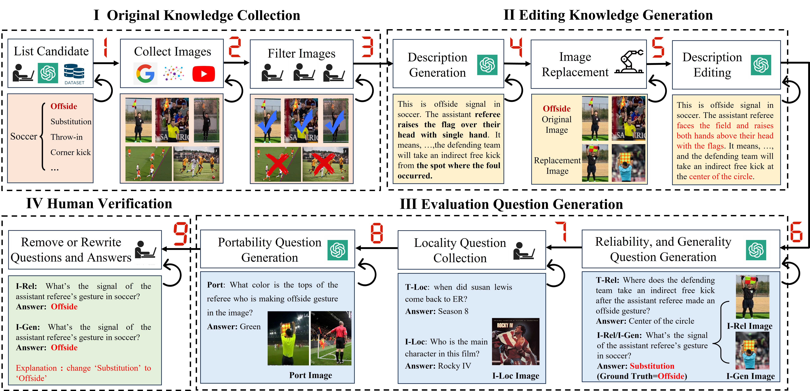

We construct the benchmark through four steps: i) Original Knowledge Collection; ii) Editing Knowledge Generation; iii) Evaluation Question Generation; and iv) Human Verification.
Original Knowledge Collection
In gathering original knowledge, we first list candidate fine-grained entities, visual semantics, or user-specific items, and then collect their corresponding images and descriptions.
For visual entity editing, we source candidates from two datasets: the multimodal knowledge graph, MMpedia, and the visual entity recognition dataset, OVEN. For visual semantic editing, we define the candidates across 14
broad categories of semantic knowledge, including single-person behaviors, single-object behaviors or attributes, object relationships, and global structures. For user-specific editing, we consider 9 broad categories of personalized information sources, such as
favorite singers, owned pets, and alma maters. The type of the samples is shown in Figure 1.

Editing Knowledge Generation
Considering the multimodal nature of large multimodal models (LMMs), we propose editing both text and visual modalities when constructing the benchmark. Specifically, we focus on editing visual entities and visual semantic knowledge while leaving user-specific knowledge unchanged. The former is treated as knowledge editing, while the latter is regarded as knowledge insertion.
For the visual modality, we follow the image-replacement-based editing approach from previous work, where an image of the entity or semantic action is randomly replaced with another of the same type. In the text modality, we modify key information about the entity and the rule or meaning into counterfactual content for visual entity editing and visual semantic editing, respectively. Additionally, we update the action description to align with the new visual content.
Evaluation Question Generation
We adhere to four key evaluation principles to generate both the questions and answers, namely Reliability, Locality, Generalization, and Portability. The Reliability question, Generalization question, and Portability question is generated by LLM and Locality question is collected from existing benchmark.
Human Check & Benchmark Statistics
During benchmark construction, we manually collected, reviewed, and filtered the samples multiple times. In the original knowledge collection stage, we conducted a thorough manual review of the images associated with each entity, behavior, and object to ensure the quality of the collected visuals.
Furthermore, after counterfactual editing and question generation, we manually reviewed the questions, revised unsuitable questions, and corrected wrong answers.
The statistics of MMKE-Bench are shown in Tab 1. MMKE-Bench encompasses 3 classes of edited knowledge, totaling 2,940 knowledge pieces and 7,229 images. The knowledge spans 110 types, highlighting the diversity of MMKE-Bench. We split the dataset into training and validation sets at 4:6, with the training set reserved solely for specific knowledge editing methods(e.g., SERAC and MEND).